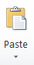

Рад са текстом - едитовање и форматирање текста¶
- На овом часу ћеш научити:
која је разлика између едитовања и форматирања текста;
како да урадиш измене у откуцаном тексту;
које су могућности и на који начин можеш да промениш изглед текста.
Програми за унос и обраду текста су бројни. Најчешће коришћен је Microsoft Office Word (MS Word). За коришћење овог програма потребно је да имамо лиценцу (програм се плаћа). Поред MS Word-а, често се користе и бесплатни програм Libre Office Writer (LO Writer) и сервис Google Docs (Гугл документи). Радом у једном од ових програма стичемо знања и вештине потребне за рад у другим програмима исте намене. Интересантно је да различити програми за рад са текстом користе врло сличне иконице за означавање опција за измене у тексту.
Обрадити текст значи изменити га. Када су измене у питању, важно је да знамо да постоје две основне категорије – едитовање (енг. edit) и форматирање (енг. format).
Едитовање је суштинско мењање текста. Ако прочитамо текст пре и после едитовања, видећемо да његов садржај није исти.
Форматирање је промена изгледа текста. Ако прочитамо текст пре и после форматирања, видећемо да је садржај остао исти, али је изглед текста другачији.
Пре него што применимо едитовање или форматирање, морамо да означимо на који део текста се те активности односе. То ћемо урадити тако што ћемо означити (каже се и одабрати, селектовати) текст који желимо, а онда применити акцију едитовања или форматирања.
Текст означавамо тако што кликнемо испред првог знака и, држећи притиснут леви тастер миша, превучемо преко текста који желимо да означимо. У тексту се може означити и само једно слово, реч, реченица, пасус, али и цео текст. Цео текст можеш означити тако што ћеш на тастатури истовремено притиснути тастере Ctrl и A.
Најважније акције едитовања приказане су у доњој табели.
Акције едитовања |
Корак пре примене акције едитовања |
Резултат примене |
|---|---|---|
Брисање текста (помоћу тастера Delete) |
||
Брисање текста (помоћу тастера Backspace) |
||
Дописивање текста |
|
|
Копирање текста |
|
одаберемо место у тексту где желимо да копирамо текст и притиснемо  |
Одсецање текста |
|
одаберемо место у тексту где желимо да преместимо текст и притиснемо |


Опис поступка едитовања у програму за обраду текста можете погледати у следећем видеу:

Када пишемо оловком на папиру свако од нас исписује слова и бројеве на посебан начин. Неко има врло уредан рукопис, неко пише слова више искошено и слично. Програми за рад са текстом нуде ти да одабереш „дигитални рукопис“ - фонт (на пример, Times New Roman, Arial, Cambria…)
Фонтови су фамилије слова, бројева и знакова карактеристичног изгледа. Никада не губи из вида да је основна сврха текста да информише читаоца. Људи воле да читају прегледне текстове. Зато, бирај лако читљиве фонтове који не заузимају превише места на страни.
Промена врсте слова је једна од основних акција подешавања изгледа текста (форматирања). Осим слова, у програмима за обраду текста може се подешавати и изглед пасуса (на пример, да ли ће текст бити постављен на средину као наслов или поравнат са обе стране) и изглед странице.
Најважније акције форматирања приказане су у доњој табели.
Акције форматирања |
Корак пре примене акције форматирања |
Резултат примене |
|---|---|---|
Промена врсте фонта |
|
|
Промена величине фонта |
|
|
Промена боје фонта |
|
|
Подебљавање текста |
|
|
Искошавање текста |
|
|
Подвлачење текста |
||
Промена слова из малих у велика |
|
|
Промена слова из великих у мала |
|
|
Набрајање знаковима (тачкице, цртице и сл) |
|
|
Набрајање бројевима |
|
|
Текст поравнат са леве стране |
||
Текст је центриран, постављен на средину |
|
|
Текст поравнат са десне стране |
|
|
Текст поравнат са леве и десне стране |
|


{kind=link}
{kind=link}
{kind=link}
{kind=link}
{kind=link}
{kind=link}
{kind=link}
{kind=link}
{kind=link}
{kind=link}
{kind=link}
{kind=link}
{kind=link}
{kind=link}
{kind=link}
{kind=link}
{kind=link}
Опис поступка форматирања у програму за обраду текста можете погледати на доњем видеу:
Чување документа¶
Документ се чува извођењем следећих акција:
кликни на
File→Save As;у прозору који се отворио, можеш да упишеш име фајла и изабереш место на коме ћеш га сачувати;
потврди чување документа кликом на дугме Save.
Опис поступка за чување текстуалног документа у програму за обраду текста можете погледати на доњем видеу:
Уметање слике у текст¶
Да бисмо што боље разумели текст често у документ са текстом додајемо слику.
Опције за додавање графичких елемената (слика, графикона) налазе се на картици Уметање (енг. Insert).
Процес додавања слике је веома једноставан: одаберемо опцију Insert (1), отвара се прозор у коме бирамо жељену слику (2), и кликнемо на дугме Insert (3).

Слике се у различитим програмима за обраду текста додају на сличан начин.
Опис поступка уметања слике у текст у програму за обраду текста можете погледати на доњем видеу:
Положај слике на страници можемо да подесимо на исти начин као што поравнавамо текст. Постоје и додатне опције за подешавање положаја слике у тексуталном документу. О њима ћемо се детаљније бавити у наредним разредима.
Текстуални документ можемо да одштампамо одабиром опције File → Print.
Опис поступка штампања документа можете погледати на доњем видеу:
- Рад у апликацији, односно сервису Google Doc омогућава да:
пишемо текстовa, чак и без интернет конекције.
делимо документе и радимо са другим људима, у исто време, али са различитих локација.
све што напишемо аутоматски буде сачувано у облаку података.
отварамо, дорађујемо и чувамо документе креиране у другим програмима за обраду текста.

Значајно је нагласити да није важно у ком програму за рад са текстом радимо. Свако ко познаје принцип рада у једном, способан је да користи сваки од њих!
Опис поступка едитовања и форматирања текста у сервису Google Doc можете погледати на доњем видеу:
Опис поступка дељења документа у сервису Google Doc можете погледати на доњем видеу:
- Шта смо научили?
да je eдитовање суштинско мењање текста;
да је форматирање промена изгледа текста;
да су фонтови фамилије слова, бројева и знакова карактеристичног изгледа.